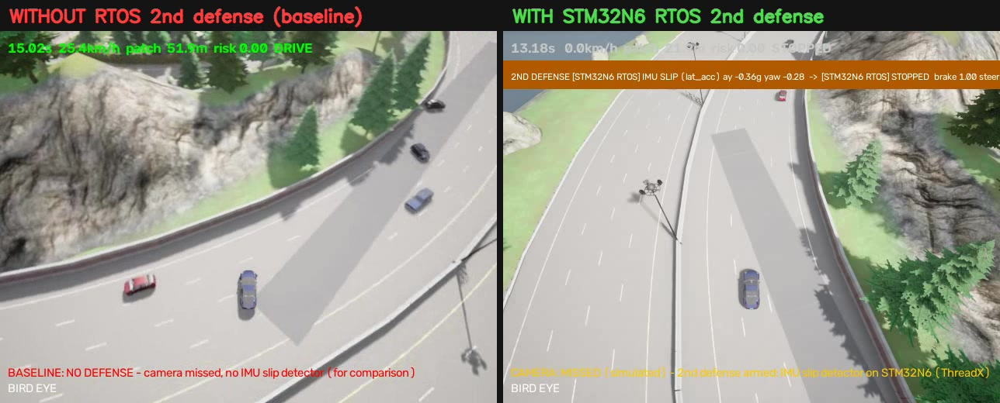
블랙아이스는 공개 데이터에 라벨이 없다. 투명한 얼음은 아스팔트와 시각적으로 구분되지 않는다. 카메라 한 겹으로는 반드시 놓치는 경우가 남는다.
예측과 반응을 한 보드에 두 겹으로 올렸다. 1차는 NPU 비전이 빙판에 닿기 전에 세우고, 1차가 놓치면 2차가 IMU 거동으로 미끄러짐을 확정해 받는다.
실물 STM32N6 보드가 실제 펌웨어를 돌리고 CARLA 가 센서·물리를 제공하는 HIL 로 주행 108회, 실사진 69,358장을 보드에 직접 넣어 측정했다.
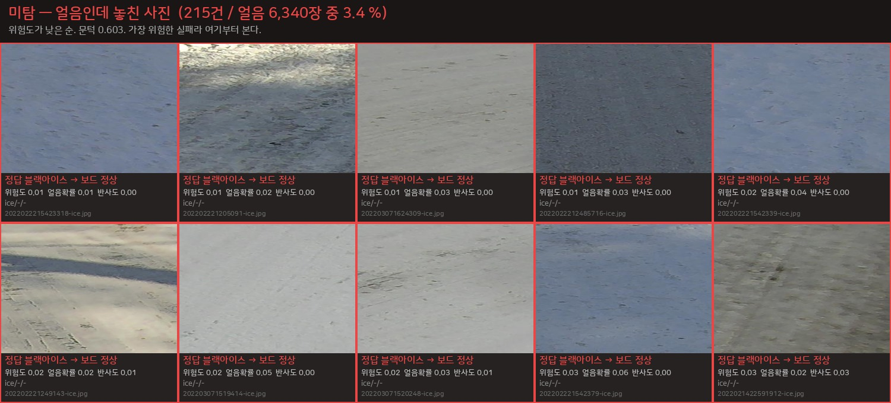
공개 데이터셋에 '블랙아이스' 라벨이 없다. RSCD 의 ice 57,262장도
다져진 눈·서리에 가까운 '얼음 노면'일 뿐, 투명한 블랙아이스를 따로 구분하지 않는다.
투명·검은 얼음이 아스팔트와 시각적으로 구분되지 않는다는 것은 업계 통설이다. 우리 모델도 마찬가지로, 실사진 얼음 6,340장 중 215장(3.4 %)이 문턱 아래에 남는다.
1차는 블랙아이스를 직접 맞히려 하지 않는다. '결빙 위험 노면 확률 + 반사도 이상 + 기상 맥락'으로 위험도를 올린다. 그리고 그 전략이 실패할 때를 위해 2차가 있다.
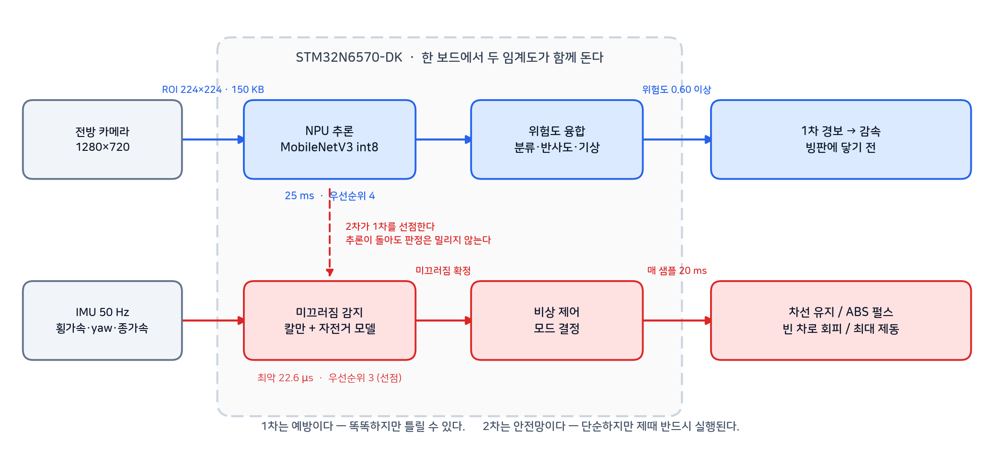
| 1차 방어 · 예측 | 2차 방어 · 반응 | |
|---|---|---|
| 센서 | 전방 카메라 | IMU (횡가속 · yaw rate · 종가속) |
| 판단 | 노면 4분류 + 반사도 + 기상 맥락 → 위험도 | 칼만 필터 + 자전거 모델 잔차 → 미끄러짐 확정 |
| 시점 | 빙판에 닿기 전 | 미끄러지기 시작한 뒤 |
| 성격 | 똑똑하지만 틀릴 수 있다 | 단순하지만 제때 반드시 실행된다 |
| 실행 | STM32N6 NPU · 25 ms | STM32N6 + ThreadX · 최악 22.6 µs |
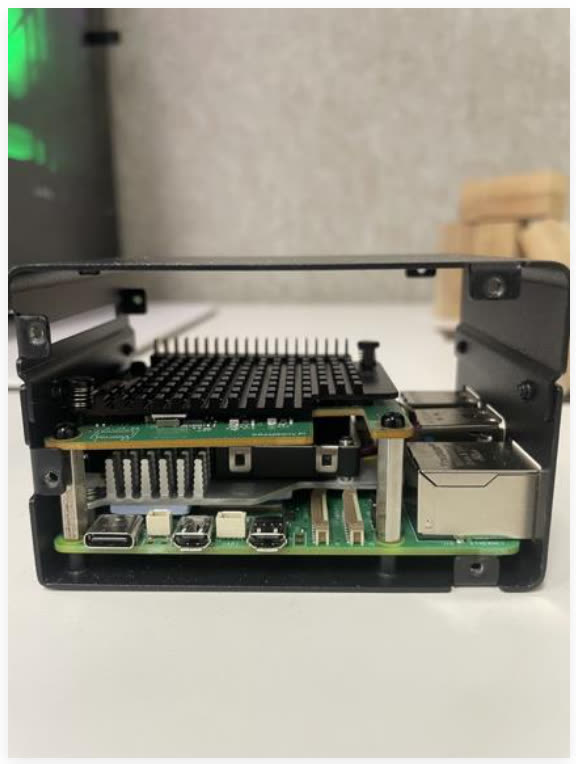
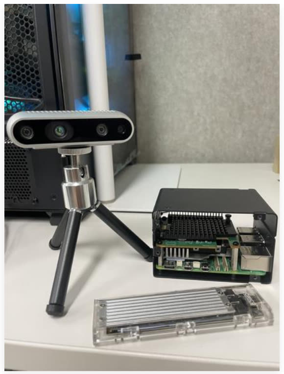
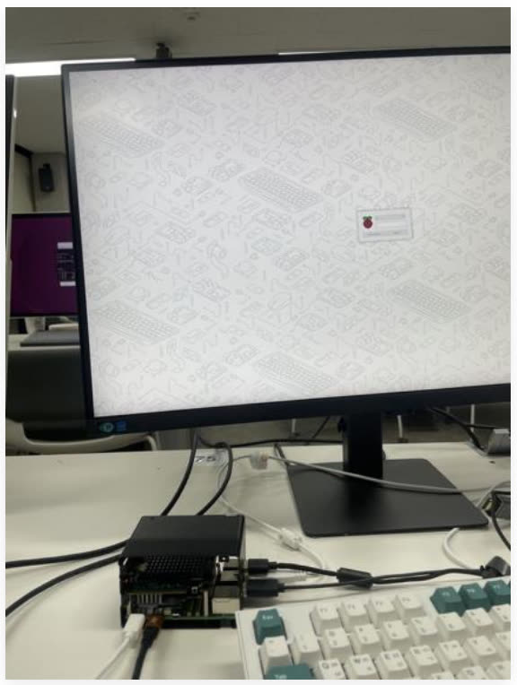
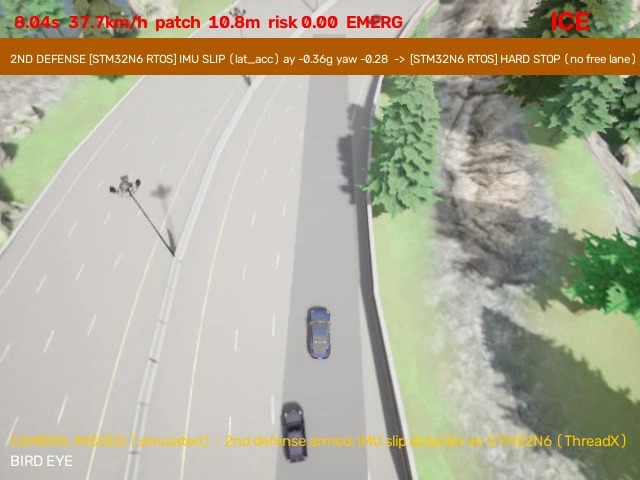
| 구성 | 역할 |
|---|---|
| STM32N6570-DK | 1차 NPU 추론(Neural-ART @ 1 GHz) + 2차 ThreadX 실시간 판정·제어. 두 임계도가 한 보드에 공존한다 |
| Raspberry Pi 5 16 GB + AI HAT+ 2 | 호스트. 기상 맥락 생성, ZMQ 통신 브리지, 교차 검증용 NPU (대회 필수 보드) |
| RealSense D435i | RGB · 뎁스 · IMU. 실측 노이즈 특성 확보용 |
| RTX 5090 워크스테이션 | CARLA 0.9.16 — HIL 환경의 물리·센서 제공 |
| 항목 | 개발계획서(6월) | 실제 구현 | 바꾼 이유 |
|---|---|---|---|
| 2차 방어 실행 환경 | Pi 5 + 리눅스 | STM32N6 + ThreadX RTOS | 리눅스 최악 깨어남 지연이 5,790 µs로 측정됐다. 제어 주기 20 ms의 29 %를 한 번의 지터가 먹는다. 평균이 아니라 꼬리가 안전 기능의 기준이다 |
| 1차 NPU | Hailo-10H 단독 | Neural-ART(N6) 주 · Hailo 교차검증 | Hailo Dataflow Compiler 를 확보하지 못해 int8 변환 경로를 열지 못했다. 1·2차를 한 보드에 올리는 편이 선점 구조를 증명하기에도 맞다 |
| 검증 방법 | 1/5 차량 저마찰 노면 실측 | HIL (실물 보드 + CARLA) + 실사진 69,358장 | 실물 빙판을 재현 가능하게 만들기 어렵다. 대신 펌웨어는 실물 보드에서 그대로 돌리고, 비전 성능은 시뮬 화면이 아닌 실제 도로 사진으로 측정했다 |
| 노면 클래스 | 정상 / 젖음 / 결빙 위험 / 포트홀 | 동일 (유지) | RSCD 27클래스 → 4클래스 매핑을 계획대로 적용 |
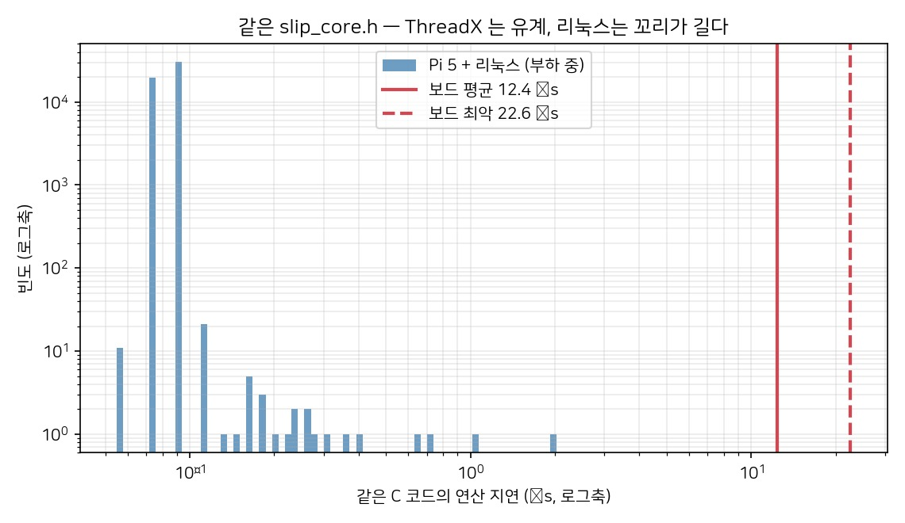
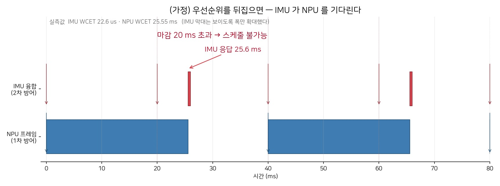
이중 안전망이라는 구조와, '블랙아이스를 직접 맞히지 않고 위험도를 올린다'는 1차 전략, '노면 라벨과 무관하게 차량 거동으로 확정한다'는 2차 전략은 계획서 그대로다. 바뀐 것은 전부 그 구조를 더 확실히 증명하기 위한 수단이다.
데이터셋을 먼저 고르지 않았다. 각 헤드가 무엇을 정답으로 배워야 하는지를 정의한 뒤 거기에 맞는 공개 데이터셋을 매핑했다.
| 방어 | 필요한 정답(label) | 데이터셋 | 활용 |
|---|---|---|---|
| 🔵 1차 | 건조 / 젖음 / 눈 / 결빙 클래스 | RSCD | 주 학습 (사전학습) |
| 🔵 1차 | 실측 수막 두께 (센서 GT) | RoadSaW | 반사도 헤드 근거 |
| 🔵 1차 | 눈 · 비 · 안개 + 조도 | AI Hub | 국내 도로 도메인 검증 |
| 🟠 2차 | 실측 6축 IMU + 노면 라벨 | PVS | 칼만 공분산 설정 |
| 🟠 2차 | RGB-IMU 동기화 · 악조건 | ROAD | 비교 기준선 |
| ⚪ 보조 | 실제 폭설 주행 씬 | CADC · WADS | 야간 · 악천후 점검 |
| ⚪ 보조 | 자동 라벨 (차선 가시성) | CARLA | 합성 데이터 생성 |
약 100만 장(공개 서브셋 37만 장) · 27클래스 = 마찰 6 × 재질 4 × 요철 3 · 베이징 약 700 km 실도로 주행(2022) · 240×360 패치라 NPU 입력 크기에 맞는다 · 눈·얼음은 결빙 57,262 · 녹은 눈 64,263 · 신설 76,730장
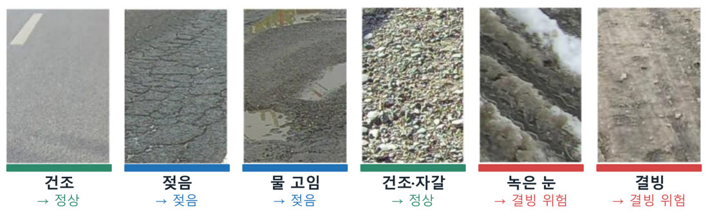
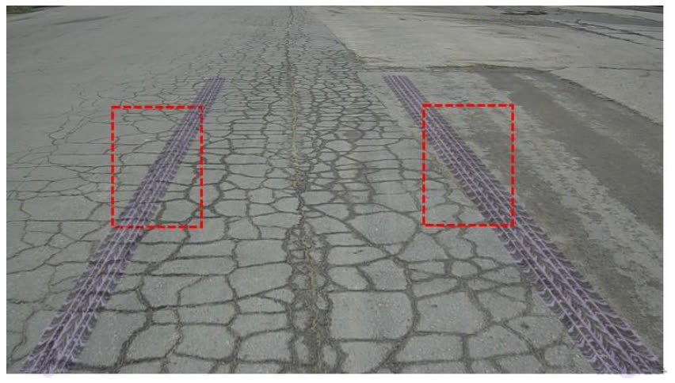
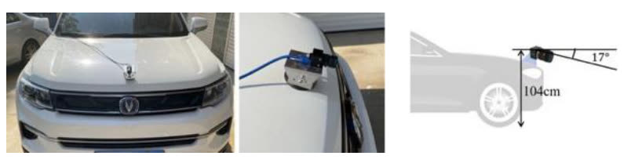
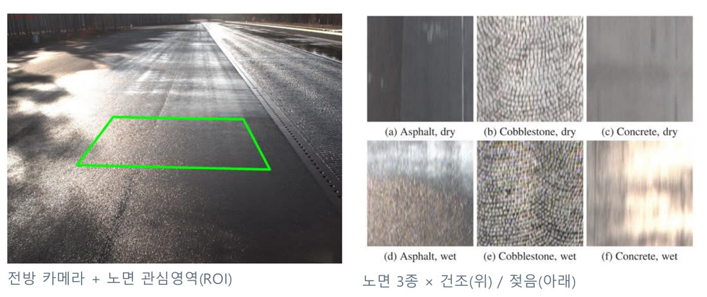
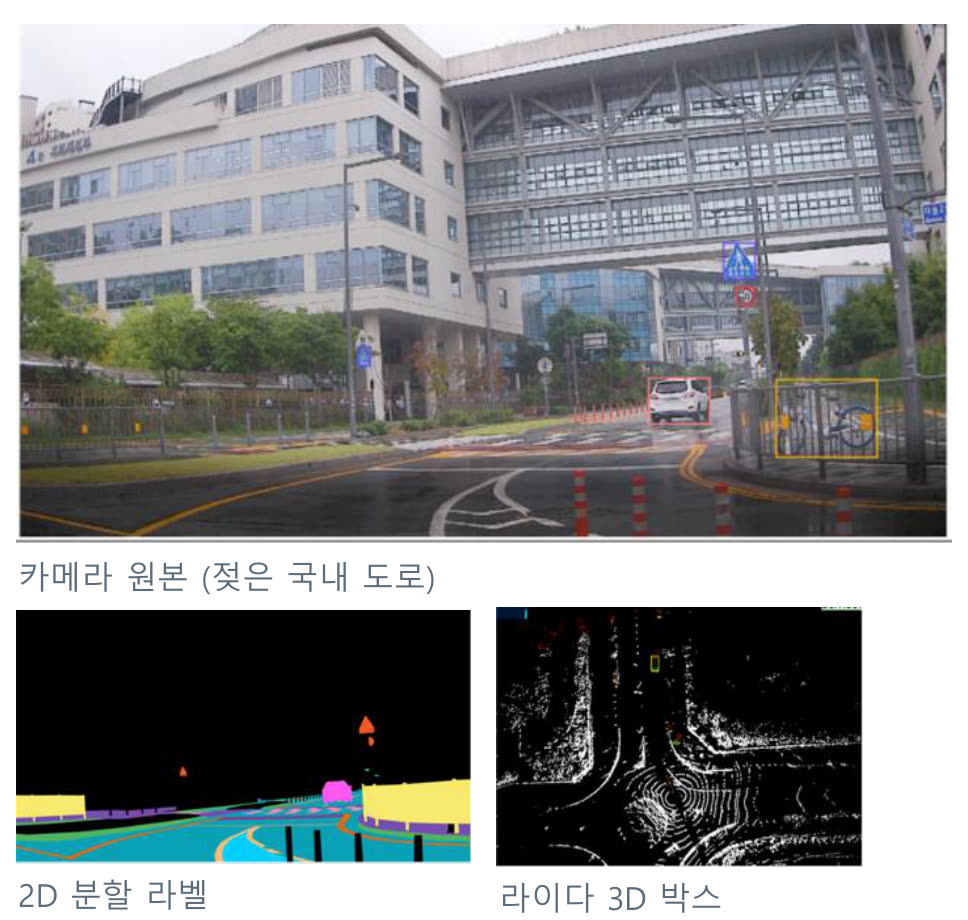
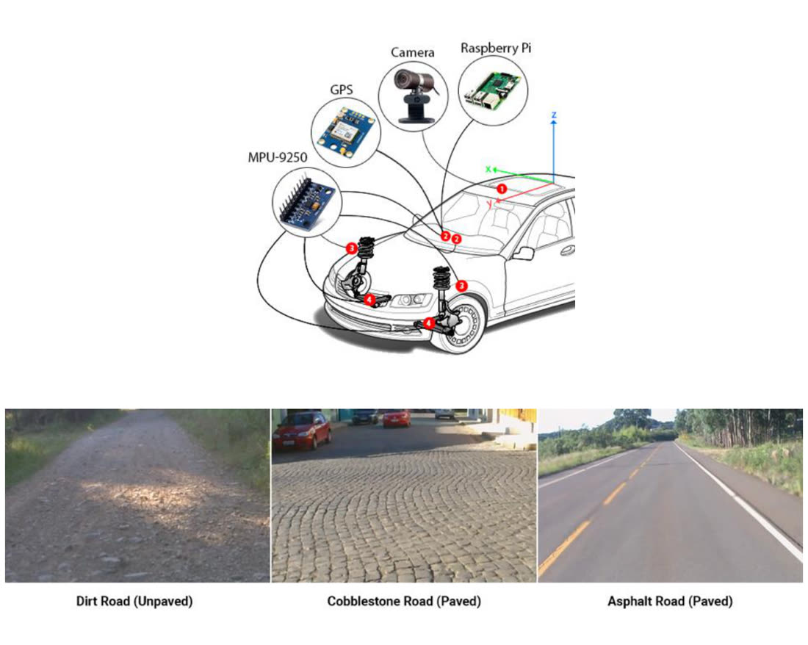
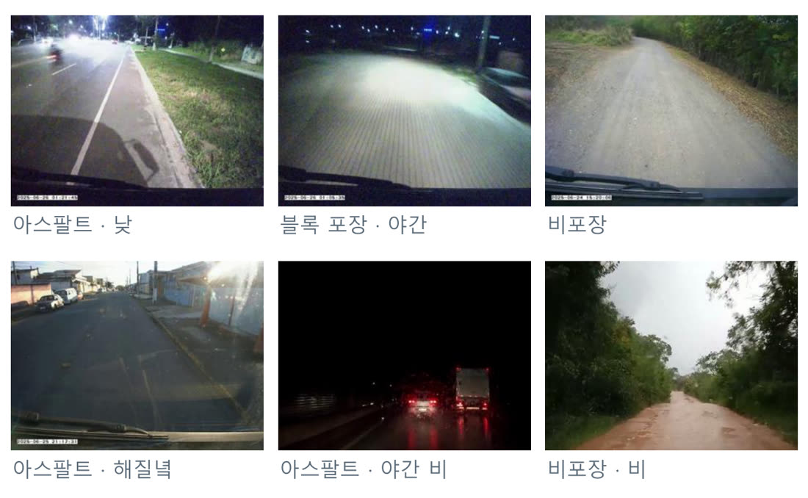
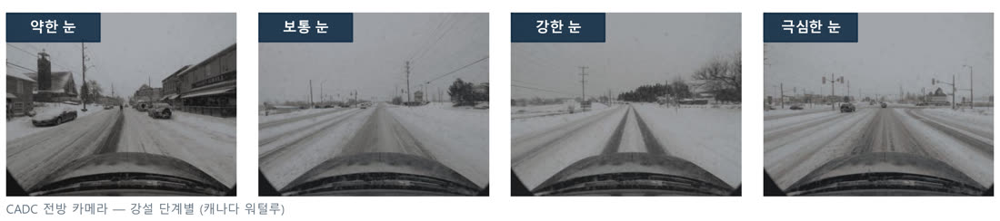
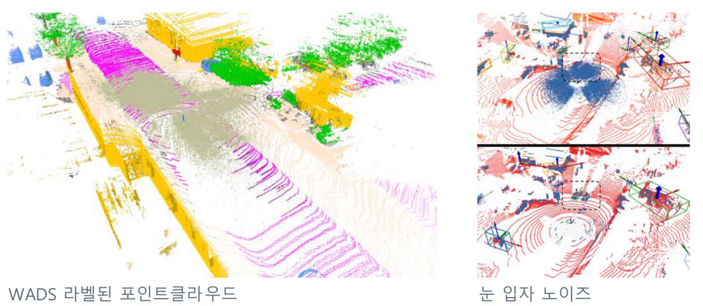
| 항목 | 값 |
|---|---|
| 백본 | MobileNetV3-Small (ImageNet 사전학습) |
| 입력 | 1×3×224×224 NCHW, int8 |
| 출력 | 4클래스 로짓 + 반사도 헤드 (576→64→1) |
| 내보내기 | ONNX opset 13, 고정 배치 1 |
| 양자화 | int8 PTQ (QDQ), 가중치 채널별 · 활성 대칭 |
| 입력 양자화 | scale 0.018658448, zero-point −14 |
| 출력 양자화 | scale 0.029451849 |
| 프레임당 전송 | 150,528 B |
| NPU | Neural-ART @ 1 GHz · 추론 25 ms |
| 카메라 ROI | 차량 전방 7.9 ~ 42.2 m (FOV 60°, 피치 −12°) |
블랙아이스의 단서는 '무슨 노면인가'보다 '빛을 어떻게 되돌리는가'에 가깝다. 분류 로짓 하나로는 젖음과 결빙이 섞인다. RoadSaW 의 실측 수막 두께를 정답으로 반사도를 회귀로 따로 배우게 하고, 융합 단계에서 분류 확률과 더한다.
표준 PTQ 로는 stem 층의 활성 분포가 넓어 int8 에서 정확도가 떨어졌다. stem 등화(equalization)와 클리핑을 적용해 회복했고, QDQ 그래프를 u8→i8 로 다시 쓰는 변환을 거쳐 Neural-ART 가 받는 형태로 맞췄다.
시뮬레이션 화면이 아니다. RSCD 실사진을 STM32N6 에 그대로 넣고 추론·융합을 전부 보드에서 돌려 받은 판정이다.
| 실제 노면 | 장수 | 정답률 | 경보율 (문턱 0.603) |
|---|---|---|---|
| 블랙아이스 | 6,340 | 96.1 % | 96.6 % |
| 마른 노면 | 19,018 | 80.7 % | 0.3 % |
| 젖은 노면 | 34,440 | 84.6 % | 0.8 % |
| 포트홀 | 9,560 | 90.2 % | 0.3 % |
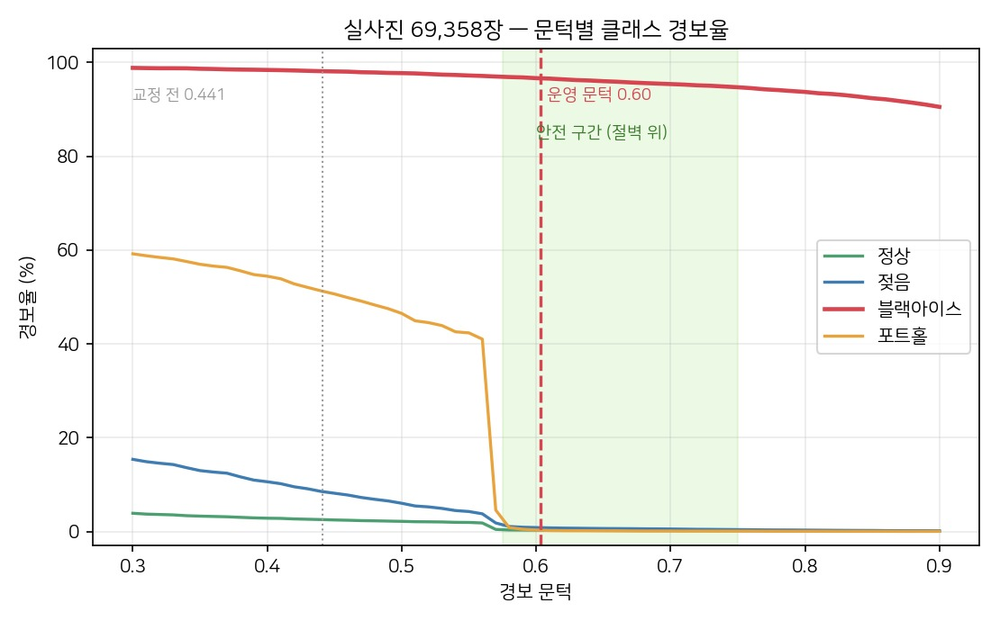
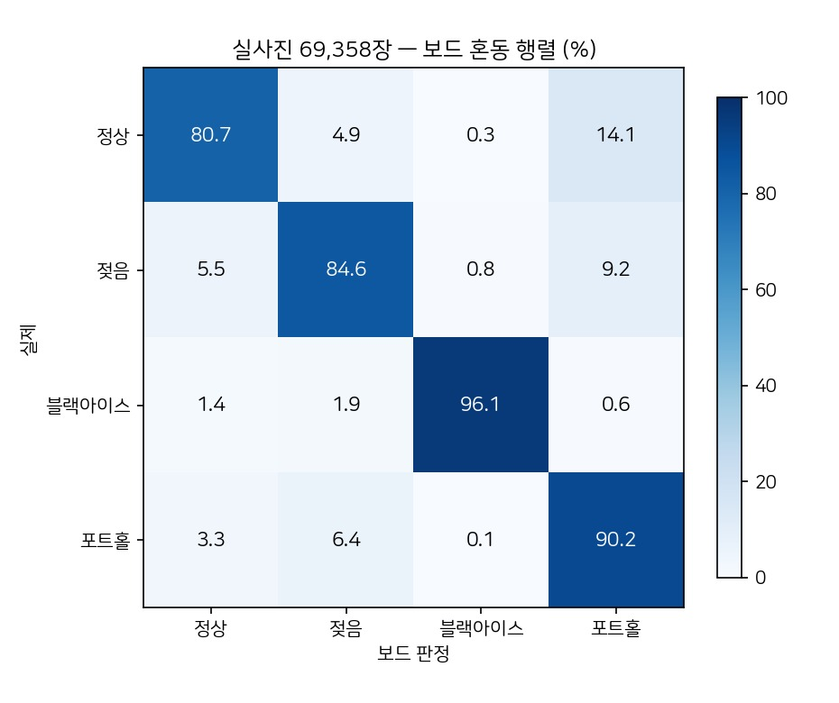
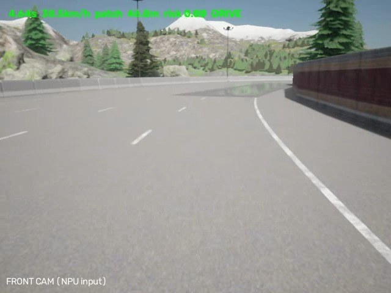
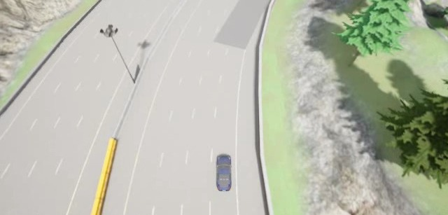
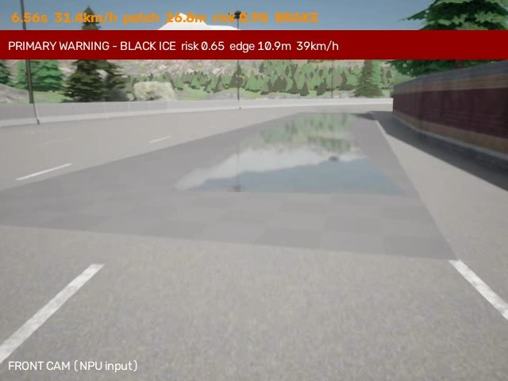
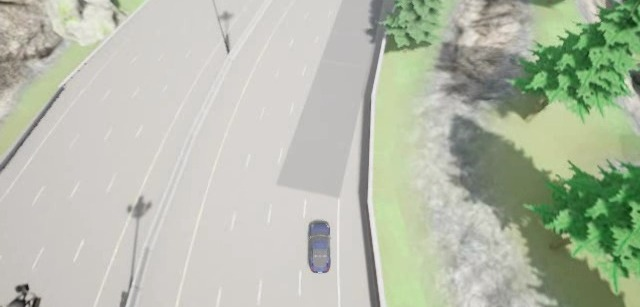
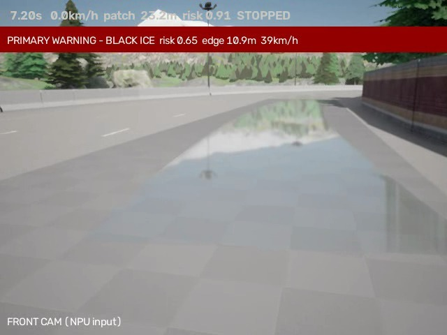
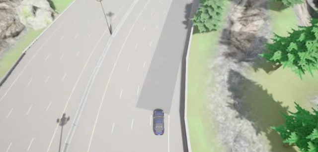
| 기상 · 위치 맥락 | α (분류) | β (반사도) | γ (차선) |
|---|---|---|---|
| 교량 · 새벽 등 결빙 위험 높음 | 0.35 | 0.45 | 0.20 |
| 일반 | 0.50 | 0.30 | 0.20 |
| 저위험 | 0.55 | 0.15 | 0.30 |
① 재정규화. 쓸 수 없는 신호에 0을 넣으면 안 된다. 0은 중립값이 아니라 최솟값이라 위험도 상한이 잘린다. 그래서 쓸 수 없는 신호는 분모에서 빼고 남은 신호로 다시 정규화한다.
② 문턱 재교정. 초기 0.441 에서는 젖은 노면 오경보가 40 %였다. 실사진 69,358장 스윕으로 절벽 구간을 찾아 0.603 으로 올렸고 오경보가 0.8 %로 내려갔다. 폭우는 강수 게이트로 따로 분리했다.
1/(1+(v/vch)²), vch = 17 m/s| 항목 | 값 | 왜 이 값인가 |
|---|---|---|
| 축거 L | 2.7 m | 자전거 모델 |
| 조향 지연 τ | 0.06 s | 급조향 시 '모델이 즉답한다'는 가정이 오탐을 만들었다 |
| 횡가속 임계 | 0.30 g | |
| yaw 오차 임계 | 0.35 rad/s | |
| 판정 규칙 | 타원 | 직사각형은 모서리에서 저속 지연이 생겼다 |
| 저마찰 트리거 | 제동 ≥ 0.3 이 0.3 s 지속 + 감속 < 1.2 m/s² | 필터 지연 구간의 오탐 방지 |
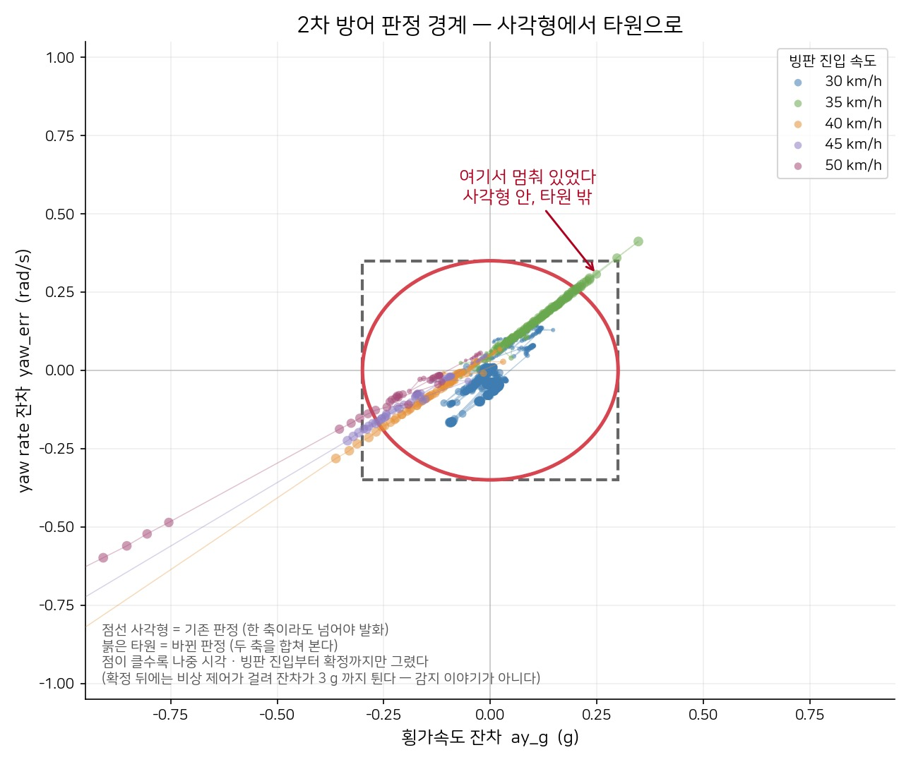
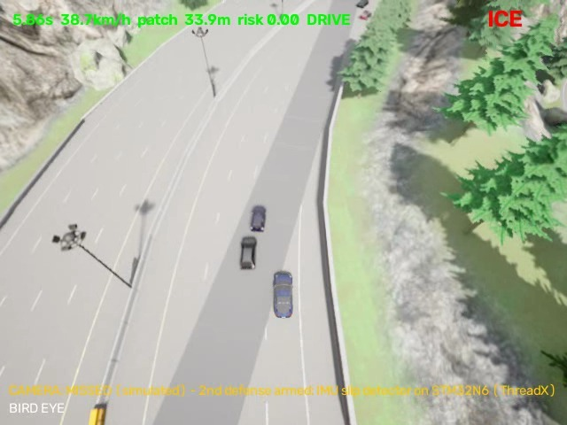
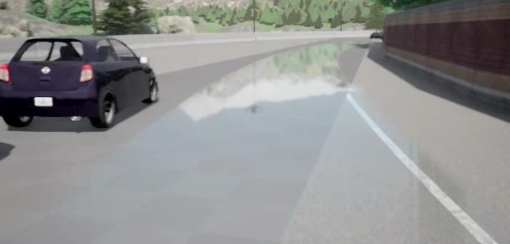
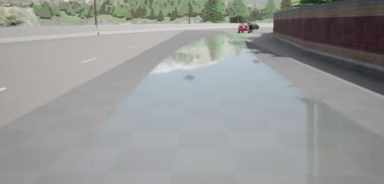
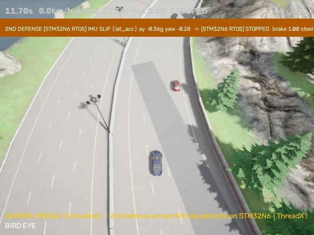
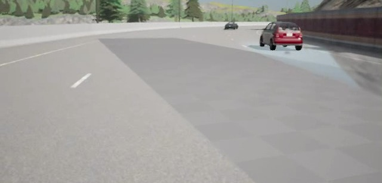
같은 연산을 Pi 5 리눅스가 평균 146배 빠르게 한다. 그런데도 RTOS 보드를 쓴다. 안전 기능의 기준은 평균이 아니라 최악이기 때문이다.
| 플랫폼 | 표본 | 중앙값 | 최악 |
|---|---|---|---|
| Pi 5 + Linux · 유휴 | 20,000 | 69 µs | 5,790 µs |
| Pi 5 + Linux · 부하 | 20,000 | 68 µs | 5,429 µs |
| STM32N6 + ThreadX (응답 전체) | 49,405 | 12.4 µs | 22.6 µs |
제어 주기는 20 ms 다. 리눅스의 최악 지터 5,790 µs 는 한 주기의 29 %를 한 번에 먹는다. 40 km/h 에서 5.8 ms 는 6.4 cm 지만, 미끄러짐이 시작된 뒤의 제어 루프에서는 그 한 번이 차선 유지와 스핀을 가른다.
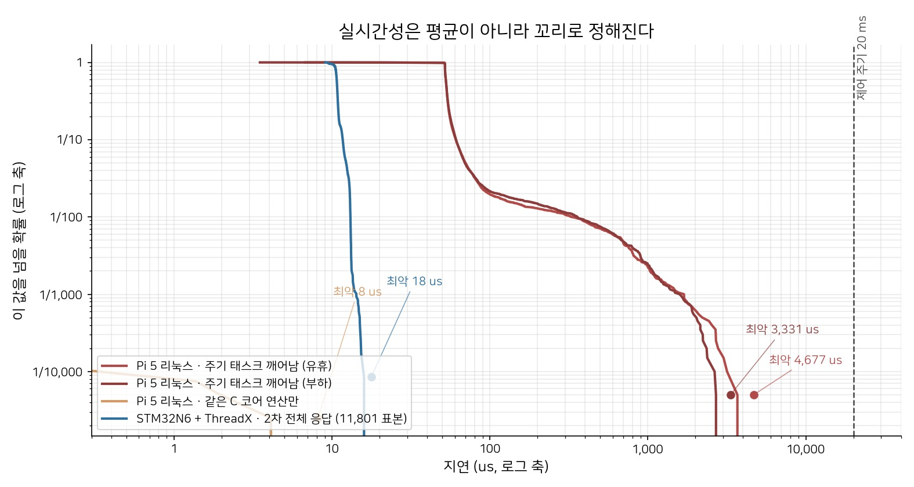
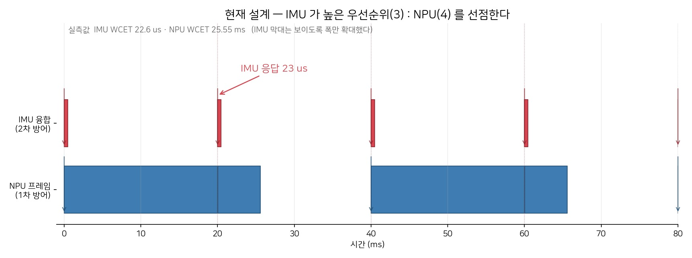
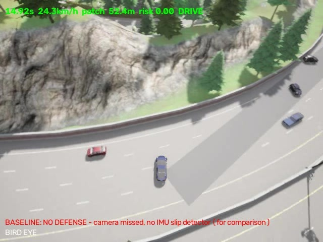
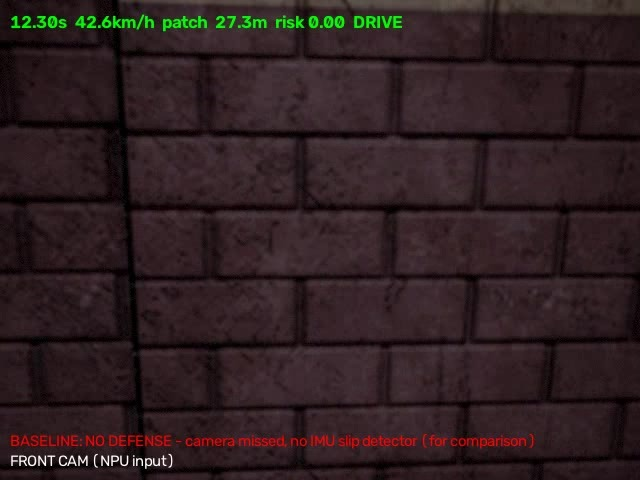
9건 전부 차선을 이탈하고 스핀했다.
그중 5건은 12~17 km/h 로 방호벽에 충돌했다.
주변 차량이 있던 4건은 충돌 전에 스핀으로 끝났다.
제어를 잃은 뒤에는 운전자 입력을 모형화하지 않는다. 비교 대상은 '우리 시스템이 개입하느냐'이지 '운전자가 얼마나 잘 대처하느냐'가 아니기 때문이다.
스핀·차선 이탈이 확정되면 자율주행을 떼고 관성에 맡기며, 정지·충돌하거나 4초가 지나면 주행을 끝낸다.
자율주행을 그대로 두면 스핀으로 역방향을 본 차가 다시 가속해 빙판으로 유턴해 들어갔다. 그때 난 충돌은 빙판이 아니라 역주행 탓이라 근거가 될 수 없었다.
15.0 s · 25.4 km/h · 12.0 s 에 차선을 이탈해 제어를 잃었고, 차체가 진행 방향과 어긋난 채 차로를 가로질러 미끄러지는 중이다. 뒤따르던 차량이 그대로 접근하고 있다.
13.2 s · 0.0 km/h · IMU SLIP (lat_acc) ay −0.36 g, yaw −0.28 → STOPPED
차선 안에서, 빙판을 벗어난 지점에 정지했다.
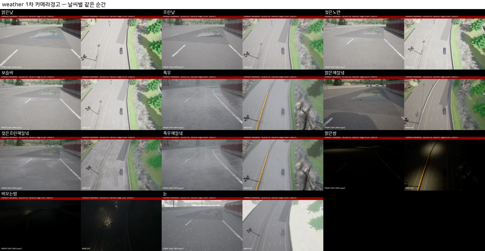
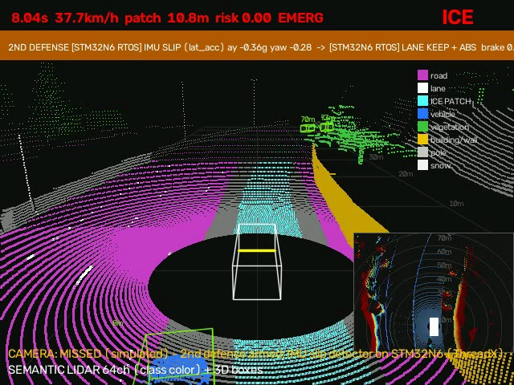
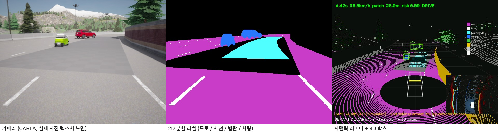
모델이 요구하는 최소 80 px 과 ROI 해상도 91 px 이 경보 거리를 정한다. 알고리즘이 아니라 해상도를 올리는 것이 먼저다.
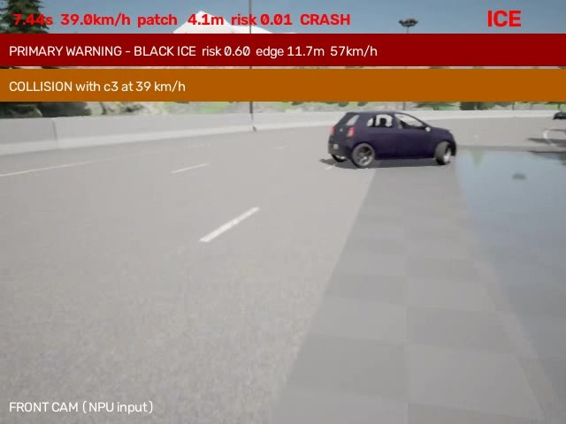
60 km/h. 1차가 경고했지만 제동이 늦어 진입했고, 2차가 0.26 s 만에 개입했는데도 39.2 km/h 로 앞차와 충돌했다.
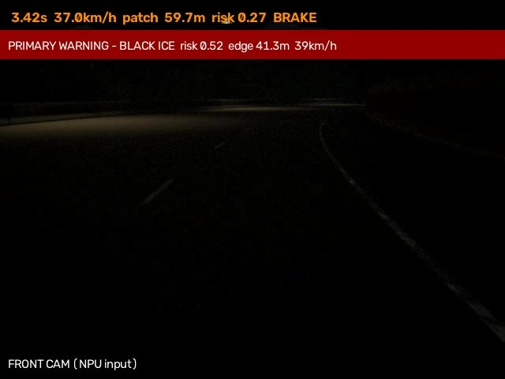
밤. 빙판이 41 m 밖(ROI 7.9~42.2 m 바깥)에 있는데 어두운 노면을 얼음으로 보아 위험도 0.52 로 경보가 났다.
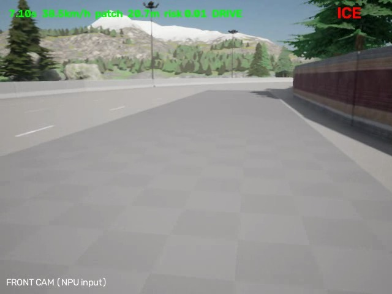
RSCD 실사진 질감을 CARLA 노면에 입히면, 같은 모델이 그 얼음에 반응하지 않는다. 재수집·재학습이 다음 과제다.
· Hailo-10H 교차 검증은 Dataflow Compiler 미확보로 열지 못했다. 1차는 STM32N6 Neural-ART 단독 결과다.
· D435i 실측 IMU 노이즈는 PVS 공개 데이터로 대체했다. 실물 연결 측정은 남은 과제다.
· 기준선은 제어 상실 후 운전자 입력을 모형화하지 않는다. '아무 보조도 없을 때의 물리적 귀결'로 읽어야 한다.
· 젖은 노면 경보율 0.8 %는 더 낮출 여지가 있다. β(반사도 가중치)와 문턱의 재조정이 필요하다.
블랙아이스 라벨이 없다는 데이터의 한계에서 출발해, 카메라 한 겹에 기대지 않는 이중 안전망을 STM32N6 한 보드 위에 올렸다. 1차는 빙판에 닿기 전에 세우고, 1차가 틀려도 2차가 최악 22.6 µs 안에 반드시 받는다.
모든 숫자는 실측에서 자동 생성된다.
git clone <저장소> && pip install -e . python3 scripts/analysis/summarize_runs.py # 집계표 재생성 python3 -m pytest -q # 단위 테스트 19개 python3 fw/npu_lib/test_slip_core.py # C 코어 ↔ 파이썬 동치
근거 문서 19건 · 결과 그림 29장 · 주행 이벤트 108건을 저장소에 함께 올렸다.
github.com/gkgk0119gmail-arch/
2026ESWContest_mobility_ARTS
MIT 라이선스 · 영상·그림·이벤트 데이터 포함 · README 에서 바로 재생된다